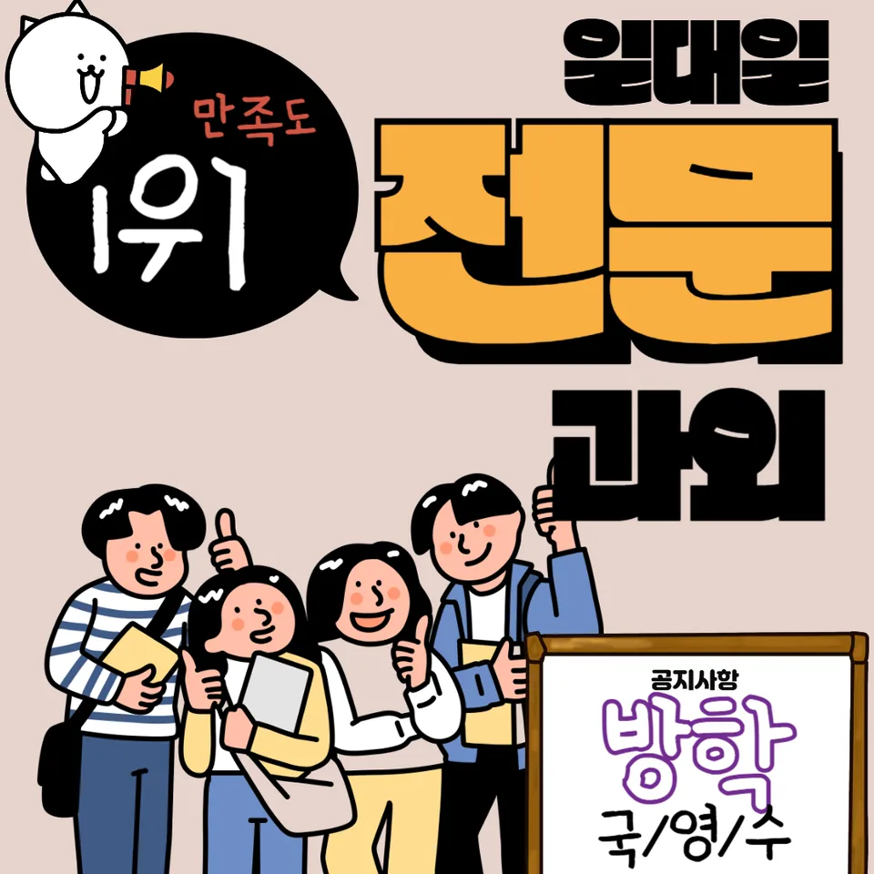

PageType : DONG
URL : /경기도과외/수원시과외/권선구과외/평동과외/
지역 학습환경과 학생들의 변화
평동과외가 시작되면 가장 먼저 달라지는 건 ‘공부하는 시간의 질’입니다. 평동 지역의 학습 환경은 조용한 편이라도, 학생마다 집중 지속 시간이 달라서 같은 교실 분위기라도 결과는 다르게 나타납니다. 그래서 수업에서는 평동과외로 진입한 학생들이 실제로 무엇에 시간을 쓰는지부터 확인합니다. 예를 들어 필기량이 많아도 문제 풀이가 끊기던 학생은, 짧은 단위로 목표를 쪼갠 뒤 오답 정리 시간을 확보하면서 성적 흐름이 안정되는 경우가 많습니다.
학교가 끝난 뒤 바로 학원으로 이동하는 학생과, 귀가 후 한 번 멈칫하는 학생의 차이가 커지는 시점도 중간입니다. 이때 평동과외에서는 ‘하루 루틴’의 빈칸을 메우는 방식으로 공부습관을 다듬습니다. 스스로 시작하기 어려운 학생에게는 시간을 늘리기보다 시작 신호를 먼저 세팅해 주고, 숙제 진행이 느린 학생에게는 난이도 순서를 바꿔 반복 학습이 자연스럽게 연결되도록 합니다.
학부모가 많이 고민하는 부분
학부모 상담에서 가장 자주 나오는 질문은 “우리 아이가 정말 공부하고 있는 걸까요?”입니다. 평동과외를 문의하는 분들은 성적표보다 과정이 보이지 않는 답답함을 먼저 말합니다. 특히 내신 기간 전에는 ‘열심히 했는데 왜 점수가 안 오르지’ 같은 상황이 반복되며, 이때 학습 태도가 흔들리면 학습량 자체가 줄어드는 패턴이 생깁니다.
또 하나의 고민은 과목별 우선순위입니다. 국어는 읽기 습관이, 수학은 개념-문제-오답 루프가, 영어는 단어와 문장 구조가 연결돼야 합니다. 평동과외에서는 과목 선택을 거창한 결론으로 밀어붙이기보다, 학습 데이터를 기준으로 어떤 과목을 먼저 고쳐야 내신 상승이 빠른지부터 정리합니다. 결과적으로 학부모는 ‘무엇을 바꿔야 하는지’가 명확해져서 불안이 줄어듭니다.
학년이 올라갈수록 달라지는 공부
중학교에서 고등으로 넘어갈 때 학생의 공부습관은 그대로 이어지지 않습니다. 기출 중심에서 단원 중심으로, 다시 평가 범위를 넓게 잡아야 하는 시기가 오기 때문입니다. 평동과외를 받는 학생들은 학년이 올라갈수록 시간을 늘리기 전에 공부 계획의 틀을 바꾸는 연습을 합니다. 예컨대 1~2학년 때는 이해가 빠른 학생이 유리하지만, 시험이 가까워지면 ‘복습 타이밍’을 놓친 학생이 불리해집니다.
그래서 학습은 같은 방식으로 반복되지 않게 구성합니다. 1학년에서는 기본기를 다지고, 2학년에는 내신 대비 루틴을 세우며, 3학년에는 시험기간의 시간관리 방식이 달라집니다. 학생은 단순히 문제를 더 푸는 것보다, 약점이 드러나는 순간을 기록하고 다음 공부에서 바로 반영하는 태도를 배우게 됩니다. 이 과정이 쌓이면 자기주도학습의 기반이 생깁니다.
학교생활과 내신 준비
내신은 ‘학교생활의 연장’처럼 움직입니다. 수업에서 놓친 부분을 과제로 때우는 학생도 있고, 반대로 교과서 진도에만 맞추다 보면 시험 직전에 압박이 커지는 학생도 있습니다. 평동과외에서는 학생이 학교에서 어떤 방식으로 필기하고, 수업 후 어떤 순서로 정리하는지부터 봅니다. 같은 수업을 들었어도 학습 정리 방식이 다르면 내신 준비 속도가 달라집니다.
시험이 가까워질수록 과목별로 공부 분위기가 바뀌는 것도 중요합니다. 예를 들어 수학은 오답이 쌓이는 속도가 빠르지만, 국어는 문장 읽기와 서술형 연습의 누적이 필요합니다. 평동과외에서는 내신 준비를 ‘마감형’이 아니라 ‘누적형’으로 바꾸어 시험 전날의 불안이 줄어들게 합니다. 학생은 수업-복습-문제-오답 정리까지 흐름을 유지하면서 점검 습관을 갖추게 됩니다.
자기주도학습이 중요한 이유
자기주도학습은 의지의 문제가 아니라 시스템의 문제로 나타납니다. 평동과외에서는 숙제 제출 여부만 보는 것이 아니라, 학생이 스스로 무엇을 선택하고 어떤 기준으로 다음 행동을 하는지 확인합니다. 시간관리도 마찬가지입니다. 밤에 오래 앉아 있는 것보다, 집중 구간을 정해 놓고 목표를 작게 성취하는 방식이 더 오래 갑니다.
학생이 자기주도학습을 시작하면 좋은 변화가 동시에 옵니다. 첫째, 공부 계획이 ‘감’에서 ‘기록’으로 바뀝니다. 둘째, 학습 태도가 시험 직전에만 반짝이지 않고 평소에도 유지됩니다. 셋째, 자기주도학습이 자리 잡은 학생은 과목 선택에서 흔들림이 줄어듭니다. 평동과외를 통해 학습 계획을 반복해서 다듬은 학생들은 “어떤 날에는 이 단원, 어떤 날에는 오답”처럼 스스로 우선순위를 잡아내는 모습을 보입니다.
공부 습관이 성적에 미치는 영향
공부습관은 성적의 바탕입니다. 평동과외에서 자주 관찰되는 변화는 ‘실수 패턴’의 감소입니다. 예를 들어 시험에서 같은 유형을 틀리는 학생은, 문제를 틀린 이유가 개념 부족인지 계산 실수인지 읽기 오류인지 구분되지 않는 경우가 많습니다. 수업에서는 틀린 문제를 한 줄로 끝내지 않게 만들고, 학생이 스스로 원인을 분류하도록 유도합니다. 그 순간부터 오답이 재발하지 않는 구조가 만들어집니다.
또한 학습의 질은 ‘이해-적용-복습’이 붙을 때 높아집니다. 학생이 같은 문제를 반복해서 푸는 듯해도, 복습 시점이 바뀌면 체감 난이도가 달라집니다. 평동과외에서는 복습을 시험일에만 몰지 않고, 단원 흐름에 맞춰 분산합니다. 그 결과 시험 기간에 벼락치기 방식이 줄고, 내신 점수가 안정적으로 움직입니다.
체크해야 할 학습 포인트
- 수업 후 24시간 안에 정리 여부: 필기만 하는지, 질문을 만들어 점검하는지 확인
- 오답 처리 방식: 정답 베끼기보다 ‘왜 틀렸는지’ 분류가 있는지 점검
- 과목별 시간 배분: 성취도와 약점 강도를 함께 반영하는지 확인
- 시험 대비의 순서: 단원 복습→유형 적용→최종 점검 흐름이 유지되는지 확인
평동과외로 방향을 세우는 방법
평동과외는 학생을 단기간에 바꾸는 것보다, 학습이 반복되며 성장하도록 돕는 데 초점을 둡니다. 처음에는 목표를 크게 잡기보다 현재 수준을 정확히 파악하고, 공부 계획을 ‘작동하는 형태’로 만들어 줍니다. 학부모는 과정을 함께 확인하며 조정 포인트를 찾게 되고, 학생은 학교생활 속에서 내신 준비가 자연스럽게 이어지는 경험을 합니다. 시험이 다가와도 흔들리지 않는 이유는 결국 자기주도학습이 일상에 연결되기 때문입니다.
자주 묻는 질문
평동과외는 어떤 학생에게 특히 도움이 되나요?
학교 진도는 따라가지만 내신에서 점수가 들쭉날쭉한 학생, 오답 정리가 반복되는 학생, 공부 계획이 시험 직전에 무너지는 학생에게 효과가 큽니다.
처음 시작할 때 무엇을 먼저 확인하나요?
학생의 공부습관, 수업 후 정리 방식, 시간관리 패턴, 과목별 약점 유형을 점검해 평동과외의 학습 방향을 잡습니다.
내신 준비는 시험기간에만 하면 되나요?
시험기간 전부터 누적이 시작되어야 안정적입니다. 평동과외에서는 단원 흐름에 맞춘 복습과 유형 적용을 함께 설계합니다.
자기주도학습을 잘하는 학생은 따로 있나요?
처음부터 잘하기보다 시스템이 갖춰지면 달라집니다. 학생이 기록하고 다음 행동을 선택하는 훈련을 통해 자기주도학습이 자리 잡습니다.
과목 선택이나 학습 순서는 어떻게 정하나요?
현재 성취도와 실수 패턴, 내신 범위의 중요도를 함께 보고 우선순위를 정합니다. 평동과외는 억지로 많이 하게 하기보다 효율적인 순서를 우선 잡습니다.
